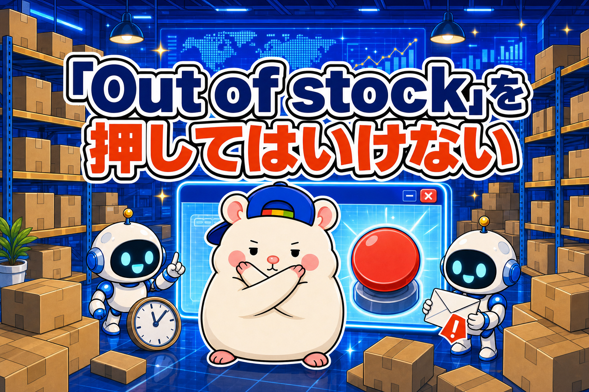
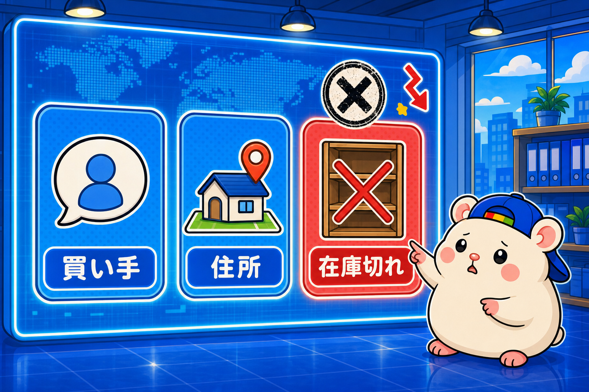
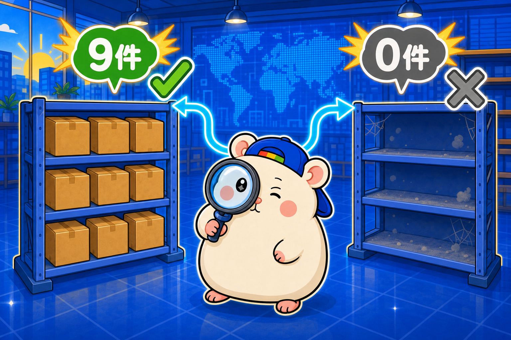
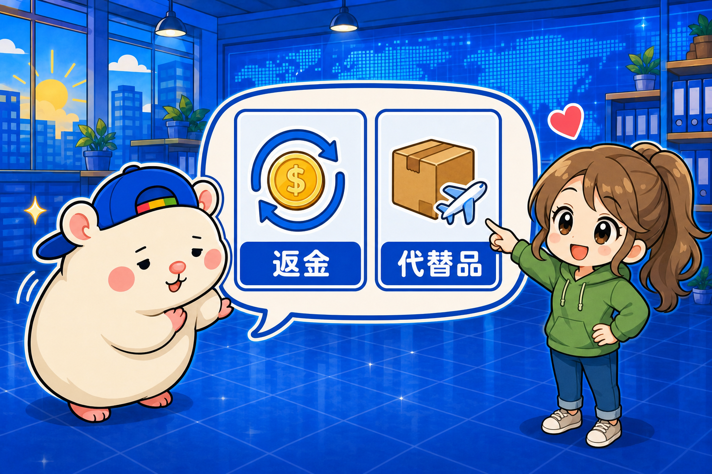
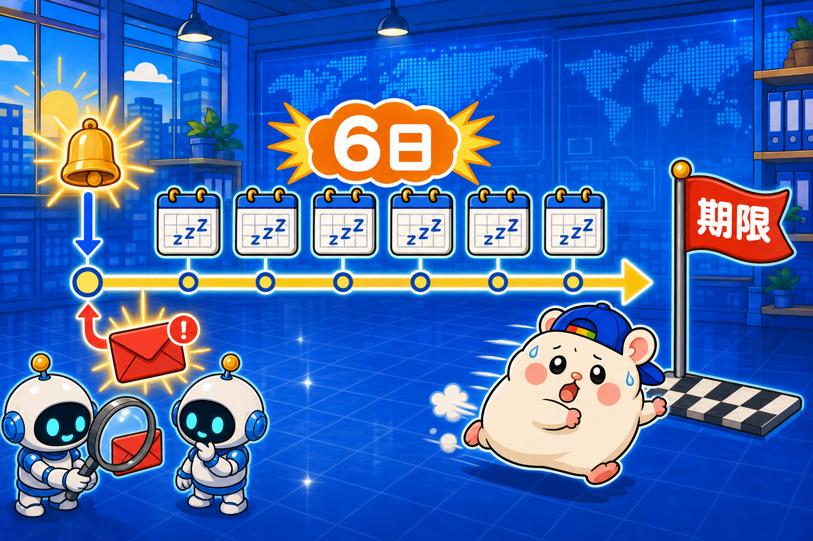
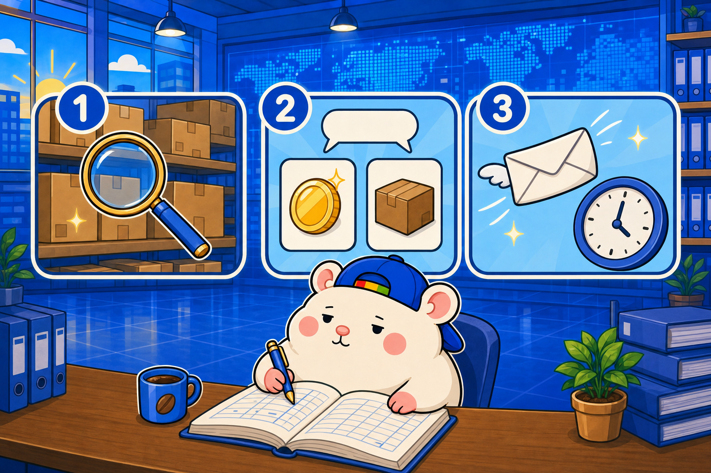

eBayで商品が売れたのに、仕入元に在庫がない！
無在庫でいちばん怖い事故は、これです。
売れた。仕入元に買いに行った。在庫がなくなってた。
ぼくの店で8月末、これが2件同時に起きました。
1件目は$244の注文、2件目は$129の注文。
しかも、仕入元からのキャンセルに6日間気づかず、気づいたときには発送期限を過ぎていました。
そこから2件を同時にさばくことになりました。
今日は、その経験から在庫切れのときにどう動くかの手順を書きます。
2件の結末は、きれいに分かれました。
なぜ「Out of stock」を押したくないのか

eBayでセラーが注文をキャンセルするとき、理由を3つから選びます。
- 買い手からの依頼
- 住所に問題がある
- 在庫切れ、または履行できない(Out of stock)
上の2つは、セラーの責任にはなりません。
3つ目だけが、セラーの「ディフェクト」として記録されます。
ディフェクトは、たまると店の評価ランクが落ちます。
ぼくの店の場合、4件たまるとBelow Standard。
そうなると検索で埋もれて、売れなくなります。
だから在庫切れの現場でやることは、ひとつ。
「Out of stock」を押さずに済む道を、先に全部さがす。
手順①: まず、代わりの品をさがす

仕入元でキャンセルされたら、最初にやるのは「同じ型番の在庫が、ほかにないか」です。
1件目は、同じ型番が仕入元に9件ありました。
最安は¥22,500。元の仕入値¥12,400の、ほぼ2倍です。
2件目は、0件。
ここで道が2つに分かれます。
手順②(代わりがある): 買い手に、二択を正直に出す

代わりがあるなら、買い手にこう聞きます。
「仕入元の倉庫で確保できませんでした。申し訳ありません。
全額返金か、追加費用なしで代わりの品を3〜4営業日で発送か、どちらがいいですか」
ポイントは、こちらで決めつけないことです。
「送ります」と勝手に進めない。
「返金します」と勝手に閉じない。
1件目の買い手からは、その日のうちに返事が来ました。
「If you could send another unit that would be great!!」
代わりの品を買いました。
仕入¥22,500に送料¥1,000。
この1件の損益は、約4,900円の赤字です。
それでも送ります。
赤字4,900円は、ディフェクト1件と評価を守る代金です。
買い手からは「Thank you」が返ってきて、翌日には国内発送まで進みました。
手順③(代わりがない): 買い手のほうからキャンセルしてもらう
代わりがなければ、返金しかありません。
でも、ここでもまだ「Out of stock」は押しません。
買い手に事情を正直に伝えて、買い手のほうからキャンセル依頼を出してもらうようお願いします。
買い手発のキャンセルを承諾するぶんには、ディフェクトになりません。
そして24時間、待ちます。
2件目の買い手からは、返事がありませんでした。
メッセージは、通算0件。
期限が来て、ぼくは「Out of stock」を押しました。
ディフェクト0件だった店の成績が、39件中1件になりました。
敗因は「在庫切れ」ではなく「時間切れ」でした

2件の差は、代わりの品があったかどうか。
それだけに見えます。
でも本当の敗因は、べつのところにあります。
2件目は、受注したその日に仕入元からキャンセルされていました。
そのメールに、6日間、誰も気づかなかった。
動きはじめたのが発送期限を過ぎてからだったので、買い手の返事を待つ時間が、もう残っていなかったんです。
即日に気づいていれば、24時間待って、返事がなければもう一度聞いて、それでもだめなら同等品を提案する。
そういう手がぜんぶ、期限の内側に収まっていました。
なので、いま作っている流れはこうです。
- 仕入元のキャンセルメールを、AIが1日2回照合する(9/3に実装済み)
- 発送期限の24時間前と超過を、AIが自動で警告する(同じく実装済み)
- 即日に代わりの品をさがして、買い手に二択を出す
- 同じ型番がなければ、同等品の提案まで出す
- 「Out of stock」は、買い手が無反応のまま期限が来たときだけ
在庫切れは、無在庫をやっていれば必ず起きます。
でも「Out of stock」を押す回数は、気づく速さで減らせます。
まとめ: 在庫切れの日にやる3手順

- ①同じ型番の在庫をさがす
- ②あるなら、買い手に「返金 or 代替品」の二択を正直に出す
- ③ないなら、買い手発のキャンセル依頼をお願いして24時間待つ
そして、この3手順を期限の内側に収めるために、仕入元からのメールは即日で拾う。
あなたの店では、仕入元のキャンセルメールを、誰が見ていますか?
台帳に書いておこう🐹
▼もう1つの副業🏠(レンタルスペース23部屋・売上1.5億)のレンスペ実録
https://note.com/rentalspace_kiku
▼ブログ(eBay×レンスペ、全記事まとめ)
https://rental-space.net
▼この店のやり方は、ぜんぶ1冊にまとめてあります
リサーチ・出品・値付け・顧客対応まで、初月利益18万6,673円を出した実店舗の記録と手順を全部書いた教科書です。
読んだその日から、AI社員の作り方をそのまま真似できます。
『AI × eBay輸出の教科書 — 梱包以外、ぜんぶAI』(9,800円)
https://brmk.io/pqk3UP
※先行5部限定の価格です。以降、2,000円ずつ値上げします。